Как перестать выбирать фреймворки и начать жить
Как перестать выбирать фреймворки и начать жить
Александра Шинкевич (@neesoglasnaja)
Кто я?
- Верстала еще на таблицах
- jQuery, VanillaJS, AngularJS, React, Angular и Vue.js
- И Node.js
- Была начальником отдела фронтенда
- Выгорела
- Уволилась и счастливая безработная

 

Что еще можно сказать про фреймворки?
- Обзор платформы, пересказ документации
- Архитектура инструмента, хардкор
- Рассказ о библиотеках экосистемы
- Как мы переехали с инструмента А на инструмент Б и выжили
- How-to, best practices или примеры из жизни
Нет
- Листочкин. Антихайп
- Симоненко. Про недоверие технологиям
- Гусев (Кот). Про проблемы фронтенда
- Юзва. Про проблемы в разработке
- Климов. "Серия" докладов FWDays разных лет на тему "абcтрактно о JS"
- Если подпишитесь на твиттер Козули - боль и депрессия круглый год!
Нормально делай - нормально будет
Почему все плохо?

Претензия 1. Плохой язык

Претензия 2. Слишком много всего

Претензия 3. Много велосипедов

Претензия 4. Все быстро меняется
Претензия 5. Длинная кривая обучения